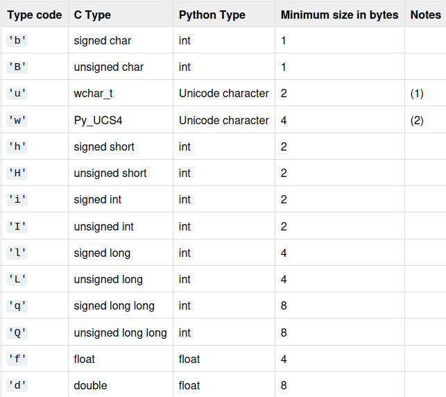

5c-GenomicRangeQuery¶
Notes¶
[!warning] Nested Helper Functions Python allows for defining Functions inside Functions. And it IS acceptable for a Codility solution. That said: - These helper functions will induce a minuscule, but non-free time penalty for being called within a loop/list comprehension. - Use these only when they significantly improve readability of your solution. Otherwise, prefer inlining your solution if that's still readable.
[!success] Use
zipover index lookups in 2+ lists Even thoughzipDOES create tuples for every iteration, which may make a measurable difference over a large number of iterations, CPython makes this cheap, and is definitely NOT a reason to avoid usingzip, even in loops! -zip(P, Q)is implemented lazily in CPython, making it FAST, and definitely... - ...definitely faster thanP[i], Q[i]as that's 2 index lookups operations, and storingitoo. - Don't uselogging.debugstatements. They are still processed even when debug is disabled, which will induce unnecessary slowdown [!warning] Python Iteration can never yield references to values Python has no iterator that mutably references a container. Iteration in Python yields values, never lvalues. That's a fundamental part of the data model, not a limitation you can work around with a clever stdlib tool. - So if you need to make changes to all elements within a list, you must use indexingls[i]. - The best solution is to useenumeratewhen the value ofls[i]depends on a value in another list/iterable. And this is the recommended, most readable solution - And readability IS assessed in Codility assessments - Python has astructmodule, butstructis used to serialize/deserialize primitive data into a compact, fixed-layout binary format. - Uses: - Binary file formats — reading/writing headers, integers, floats, etc. - Network protocols — many protocols specify exact byte layouts. - Interop with C/C++/Rust/etc. — becausestructformat strings mirror C types. - Embedded/hardware communication — sending/receiving fixed binary packets. - Compact storage — storing numbers in binary instead of text. - Memory-mapped files or binary blobs — parsing raw bytes. -filter(None, range_unchecked)will create an iterable out of range_unchecked, which will not contain anyNones [!danger] Boxing C Objects into Python Objects You'll almost never need to usebytes,bytearray,array.arrayin a real Codility exam! Note in Python, Arrays are more memory efficient - but as they are C-like structures, they need to be boxed into Python equivalent objects, before they can be used in Python loops. For example, turn a C-int into a Python-int, before Python level operations can operate on it. - Meaning its actually SLOWER to iterate through anarraythan alisteven thoughlisttakes more memory. - Same applies tobytesandbytearray! - So when is it faster to use C-like objects over regular Python objects? - Only when you are memory constrained, or have to work with bytes - Or when you need C-Level binary layout/interop withstruct/ctypes- Or you will only use C-level operations on the whole buffer. So basically you'll stick with C-level functions which are designed to avoid returning to Python loops. - E.g. All Functions/Methods these objects contain - Bit-wise operations -bytes/bytesarrayare a built-in Python types -bytearray(n)is an efficient array ofnbytes, which can be used to store an array ofnintegers from 0-255. - For ASCII characters only,stringis actually just as efficient - though it still differs in usecases. - Andstringis immutable! Not great for lazy conversion - Meanwhile eachdictentry is 80-100 bytes each, and will generate a hash to reach each entry's value - VERY expensive unless you're using few objects larger than 80 bytes - Can directly convert strings of standard ASCII characters intobytearray- Raises aValueErrorif the value cannot be converted -bytes(n)is an immutable version ofbytearray(n)- Byte Lookup Table and translation:LUT = bytes.maketrans(b"ACGT", b"\x01\x02\x03\x04")- Translates a byte to another byte. If you need a lookup table for more than 256 values (eg. 365 values), then you can use anarray.array, where the index is converted into a number. -data = bytearray(s.encode("ascii").translate(LUT))- It's always better to directly use iterablesfor num in numbersover indexingfor i in range(len(numbers): // num = numbers[i], it's like 2 instructions less and removes theivariable -memoryview(bytes/bytearray/array.array/NumPy array)is a view into that byte-like array. -ma_slice = memoryview(data)creates a reference. Now you can slicema_slice[:10]to create anothermemoryviewwhich is also a reference and doesn't create copies -memoryview(data)is mutable ifdatais mutable so: -bytearrayis mutable -bytesis not` - Array -import array-array.array(, [0,1,2,...,n])` - 
Problem¶
Code¶
Attempt 5¶
# We need to determine where A, C, G or T lies within several ranges
# For each range:
# - If A is present, then the answer is 1
# - If A is not present but C is, then the answer is 2
# - If A and C are not present but G is, then the answer is 3
# - Otherwise the answer is 4
# We cannot determine an answer without iterating at least once through the whole range
# But using cumulative counts, we can immediately obtain a count for each elements in a range
# by subtracting the counts at the start of the range, from the counts at the end of the range
def solution(S, P, Q):
# Create a table of cumulative counts for each ACGT at each idx of S
# N+1 because if we want a count from idx 0, we must subtract the 0 with X_count[0]
N = len(S)
A_counts = [0] * (N+1)
C_counts = [0] * (N+1)
G_counts = [0] * (N+1)
T_counts = [0] * (N+1)
# Technically, we only need counts from the ranges we cover.
# But a previous range's count will fully need updating if we encounter a range starting earlier
# If we want to use prefix sums/counts
# Meaning in worst case - lazy evaluation could force us to re-iterate over every single counted
# range every time - completely nullifying the advantage of prefix sums/counts
# So lets just accept doing a full pass of S, if it guarantees none of the counts will
# need updating ever again
A_count = 0
C_count = 0
G_count = 0
T_count = 0
for (i, nucleotide) in enumerate(S):
match nucleotide:
case "A":
A_count += 1
case "C":
C_count += 1
case "G":
G_count += 1
case "T":
T_count += 1
A_counts[i+1] = A_count
C_counts[i+1] = C_count
G_counts[i+1] = G_count
T_counts[i+1] = T_count
# Check each range for which letters are present. Then determine the range's impact factor
A_count = 0
C_count = 0
G_count = 0
# T_count = 0 # Not actually used here
ans = [0] * len(P)
for (i, (Pi, Qi)) in enumerate(zip(P, Q)):
A_count = A_counts[Qi+1] - A_counts[Pi]
if A_count > 0:
ans[i] = 1
continue
C_count = C_counts[Qi+1] - C_counts[Pi]
if C_count > 0:
ans[i] = 2
continue
G_count = G_counts[Qi+1] - G_counts[Pi]
if G_count > 0:
ans[i] = 3
continue
ans[i] = 4
return ans
Attempt 4¶
- This solution reuses previous information from ranges to ensure we're not double checking checked ranges
- But this feels too complicated to be the intended answer
- And it still failed all performance tests, getting timed out in all cases.
import logging # logging.basicConfig(level=logging.DEBUG) logging.debug("DISABLE DEBUGGING!!") # logging.debug(f'"{"A" * 250}{"C" * 250}{"G" * 250}{"T" * 250}"') def solution(S, P, Q): if len(P) != len(Q): return ValueError("P and Q aren't the same length!") # We may likely iterate over the same ranges several times # So we shouldn't be reconverting values we've already once converted # For only 100,000 1,2,3,4s, bytearray is easily the best choice # Clearly, the expensive part is the nested loop # So I can spend one iteration converting all of S if that means we can avoid a branch for lazy_conversion in the nested loop # and keeping an index # Nucleotide to Impact Factor Byte Lookup Table LUT = bytes.maketrans(b"ACGT", b"\x01\x02\x03\x04") S_NUMS = bytes(S.encode("ascii").translate(LUT)) logging.debug(f"S_NUMS = {S_NUMS}") # Remember previous mins range_with_min = set() ans = [0] * len(P) for (i, (Pi, Qi)) in enumerate(zip(P, Q)): min_num = 5 # Does a stored range fall fully within range(Pi, Qi+1)? # If so we don't need to check all those values again range_unchecked = list(range(Pi, Qi+1)) for Pj, Qj, min_j in range_with_min: if min_num > min_j and Pj >= Pi and Qj <= Qi: logging.debug(f"1: min_num = {min_num}") min_num = min_j if min_num == 1: break range_unchecked = range_unchecked[:Pj-Pi] + [None] * (Qj+1 - Pj) + range_unchecked[Qj+1-Pi:] logging.debug(f"2: min_num = {min_num}") if min_num == 1: range_with_min.add((Pi, Qi, 1)) # Remember Range and Min ans[i] = 1 continue # Find a new minimum in a range # We need to check the gaps in range(Pi, Qi) not covered in ranges_checked logging.debug(f"range_unchecked = {range_unchecked}") for idx in range_unchecked: if x is None: continue num = S_NUMS[idx] logging.debug(f"num = {num}") if min_num > num: logging.debug(f"3: min_num = {num}") min_num = num if min_num == 1: break range_with_min.add((Pi, Qi, min_num)) # Remember Range and Min logging.debug(f"range_with_min = {range_with_min}") ans[i] = min_num # logging.debug(S_NUMS) return ans
Attempt 3¶
- Lightning fast conversion of the DNA sequence into impact factors - and efficient views no slicing. We could've used a dict and it would be quick enough, but using a byte lookup table is quickest, and bytes can have a memory view so we don't have to create new slice objects
- But still haven't figured out where addition fits into this
- Clearly we need to be re-using information from previous runs
Test Inputs¶
("A", [0, 0], [0, 0])
("AACCGGTT", [0, 2, 4, 6], [0, 2, 4, 6])
("AACCGGTT", [0, 2, 4, 6], [1, 3, 5, 7])
("AACCGGTT", [1, 3, 5], [2, 4, 6])
("AACCGGTT", [0], [7])
("AAAAAAAAAAAAAAAAAAAAAAAAAAAAAAAAAAAAAAAAAAAAAAAAAAAAAAAAAAAAAAAAAAAAAAAAAAAAAAAAAAAAAAAAAAAAAAAAAAAAAAAAAAAAAAAAAAAAAAAAAAAAAAAAAAAAAAAAAAAAAAAAAAAAAAAAAAAAAAAAAAAAAAAAAAAAAAAAAAAAAAAAAAAAAAAAAAAAAAAAAAAAAAAAAAAAAAAAAAAAAAAAAAAAAAAAAAAAAAAAAAAAAAAAAACCCCCCCCCCCCCCCCCCCCCCCCCCCCCCCCCCCCCCCCCCCCCCCCCCCCCCCCCCCCCCCCCCCCCCCCCCCCCCCCCCCCCCCCCCCCCCCCCCCCCCCCCCCCCCCCCCCCCCCCCCCCCCCCCCCCCCCCCCCCCCCCCCCCCCCCCCCCCCCCCCCCCCCCCCCCCCCCCCCCCCCCCCCCCCCCCCCCCCCCCCCCCCCCCCCCCCCCCCCCCCCCCCCCCCCCCCCCCCCCCCCCCCCCCCGGGGGGGGGGGGGGGGGGGGGGGGGGGGGGGGGGGGGGGGGGGGGGGGGGGGGGGGGGGGGGGGGGGGGGGGGGGGGGGGGGGGGGGGGGGGGGGGGGGGGGGGGGGGGGGGGGGGGGGGGGGGGGGGGGGGGGGGGGGGGGGGGGGGGGGGGGGGGGGGGGGGGGGGGGGGGGGGGGGGGGGGGGGGGGGGGGGGGGGGGGGGGGGGGGGGGGGGGGGGGGGGGGGGGGGGGGGGGGGGGGGGGGGGGGTTTTTTTTTTTTTTTTTTTTTTTTTTTTTTTTTTTTTTTTTTTTTTTTTTTTTTTTTTTTTTTTTTTTTTTTTTTTTTTTTTTTTTTTTTTTTTTTTTTTTTTTTTTTTTTTTTTTTTTTTTTTTTTTTTTTTTTTTTTTTTTTTTTTTTTTTTTTTTTTTTTTTTTTTTTTTTTTTTTTTTTTTTTTTTTTTTTTTTTTTTTTTTTTTTTTTTTTTTTTTTTTTTTTTTTTTTTTTTTTTTTTTTTTTT", [0, 0, 0, 0, 0, 0, 0], [111, 222, 333, 444, 555, 888, 999])
Code¶
import logging
# logging.basicConfig(level=logging.DEBUG)
logging.debug("DISABLE DEBUGGING!!")
# logging.debug(f'"{"A" * 250}{"C" * 250}{"G" * 250}{"T" * 250}"')
def solution(S, P, Q):
if len(P) != len(Q):
return ValueError("P and Q aren't the same length!")
# We may likely iterate over the same ranges several times
# So we shouldn't be reconverting values we've already once converted
# For only 100,000 1,2,3,4s, bytearray is easily the best choice
# Clearly, the expensive part is the nested loop
# So I can spend one iteration converting all of S if that means we can avoid a branch for lazy_conversion in the nested loop
# and keeping an index
# Nucleotide to Impact Factor Byte Lookup Table
LUT = bytes.maketrans(b"ACGT", b"\x01\x02\x03\x04")
S_NUMS = bytearray(S.encode("ascii").translate(LUT))
# Create a mutable reference to S_NUMS
# Gonna be slicing this a lot, but we can directly iterate over this and avoid indexing into S_NUMS
S_NUMS_VIEW = memoryview(S_NUMS)
ans = [4] * len(P)
for (i, (Pi, Qi)) in enumerate(zip(P, Q)):
min_num = 4
for num in S_NUMS_VIEW[Pi:Qi+1]:
if min_num > num:
min_num = num
if min_num == 1:
break
ans[i] = min_num
logging.debug(S_NUMS)
return ans
Attempt 2¶
- Using
bytearray - Using
dictfor converting nucleotides to impact factors
Test Inputs¶
("A", [0, 0], [0, 0])
("AACCGGTT", [0, 2, 4, 6], [0, 2, 4, 6])
("AACCGGTT", [0, 2, 4, 6], [1, 3, 5, 7])
("AACCGGTT", [1, 3, 5], [2, 4, 6])
("AACCGGTT", [0], [7])
("AAAAAAAAAAAAAAAAAAAAAAAAAAAAAAAAAAAAAAAAAAAAAAAAAAAAAAAAAAAAAAAAAAAAAAAAAAAAAAAAAAAAAAAAAAAAAAAAAAAAAAAAAAAAAAAAAAAAAAAAAAAAAAAAAAAAAAAAAAAAAAAAAAAAAAAAAAAAAAAAAAAAAAAAAAAAAAAAAAAAAAAAAAAAAAAAAAAAAAAAAAAAAAAAAAAAAAAAAAAAAAAAAAAAAAAAAAAAAAAAAAAAAAAAAACCCCCCCCCCCCCCCCCCCCCCCCCCCCCCCCCCCCCCCCCCCCCCCCCCCCCCCCCCCCCCCCCCCCCCCCCCCCCCCCCCCCCCCCCCCCCCCCCCCCCCCCCCCCCCCCCCCCCCCCCCCCCCCCCCCCCCCCCCCCCCCCCCCCCCCCCCCCCCCCCCCCCCCCCCCCCCCCCCCCCCCCCCCCCCCCCCCCCCCCCCCCCCCCCCCCCCCCCCCCCCCCCCCCCCCCCCCCCCCCCCCCCCCCCCGGGGGGGGGGGGGGGGGGGGGGGGGGGGGGGGGGGGGGGGGGGGGGGGGGGGGGGGGGGGGGGGGGGGGGGGGGGGGGGGGGGGGGGGGGGGGGGGGGGGGGGGGGGGGGGGGGGGGGGGGGGGGGGGGGGGGGGGGGGGGGGGGGGGGGGGGGGGGGGGGGGGGGGGGGGGGGGGGGGGGGGGGGGGGGGGGGGGGGGGGGGGGGGGGGGGGGGGGGGGGGGGGGGGGGGGGGGGGGGGGGGGGGGGGGTTTTTTTTTTTTTTTTTTTTTTTTTTTTTTTTTTTTTTTTTTTTTTTTTTTTTTTTTTTTTTTTTTTTTTTTTTTTTTTTTTTTTTTTTTTTTTTTTTTTTTTTTTTTTTTTTTTTTTTTTTTTTTTTTTTTTTTTTTTTTTTTTTTTTTTTTTTTTTTTTTTTTTTTTTTTTTTTTTTTTTTTTTTTTTTTTTTTTTTTTTTTTTTTTTTTTTTTTTTTTTTTTTTTTTTTTTTTTTTTTTTTTTTTTT", [0], [999])
Code¶
import logging
# logging.basicConfig(level=logging.DEBUG)
logging.debug("DISABLE DEBUGGING!!")
# logging.debug(f'"{"A" * 250}{"C" * 250}{"G" * 250}{"T" * 250}"')
def solution(S, P, Q):
if len(P) != len(Q):
return ValueError("P and Q aren't the same length!")
# Nucleotide to Impact Factor
nuc_to_imp_fac = {
"A": 1,
"C": 2,
"G": 3,
"T": 4
}
# We may likely iterate over the same ranges several times
# So we shouldn't be reconverting values we've already once converted
# We should employ lazy conversion.
# For only 100,000 1,2,3,4s, bytearray is easily the best choice
S_nums = bytearray(len(S))
ans = [4] * len(P)
for (i, (Pi, Qi)) in enumerate(zip(P, Q)):
min_num = 4
for j in range(Pi, Qi+1):
num = S_nums[j]
if num == 0:
num = nuc_to_imp_fac[S[j]]
S_nums[j] = num
if min_num > num:
min_num = num
ans[i] = min_num
logging.debug(S_nums)
return ans
Attempt 1¶
- Initial attempt - completely unoptimized - but 100% on correctness tests
- Fails performance tests. From Lesson Title, we know that somehow addition can be used to optimize our calculations. If we're gonna do additions, best to turn this string into a sequence of numbers. No point converting multiple times
Test Inputs¶
("A", [0, 0], [0, 0])
("AACCGGTT", [0, 2, 4, 6], [0, 2, 4, 6])
("AACCGGTT", [0, 2, 4, 6], [1, 3, 5, 7])
("AACCGGTT", [1, 3, 5], [2, 4, 6])
("AACCGGTT", [0], [7])
Code¶
# you can write to stdout for debugging purposes, e.g.
# print("this is a debug message")
from itertools import islice
def solution(S, P, Q):
if len(P) != len(Q):
return ValueError("P and Q aren't the same length!")
ans = [4] * len(P)
for (i, (Pi, Qi)) in enumerate(zip(P, Q)):
min_impact_factor = 4
for nucleotide in islice(S, Pi, Qi+1):
impact_factor = 4
match nucleotide:
case "A":
impact_factor = 1
case "C":
impact_factor = 2
case "G":
impact_factor = 3
case "T":
# impact_factor = 4 # Already 4
pass
case _:
raise ValueError(f"S must only contain ACGT! Found: {nucleotide}")
if min_impact_factor > impact_factor:
min_impact_factor = impact_factor
ans[i] = min_impact_factor
return ans